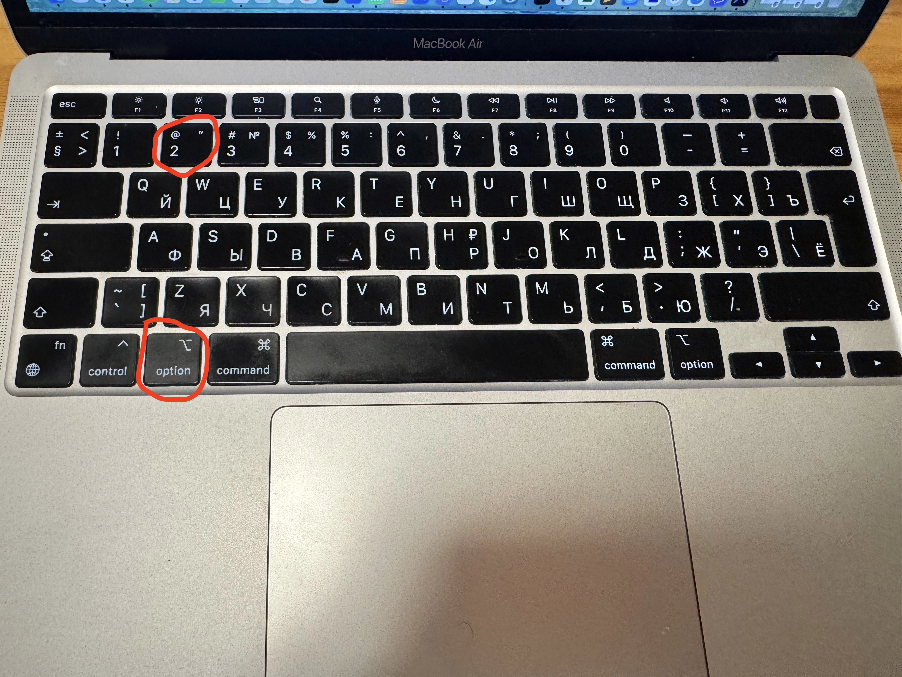
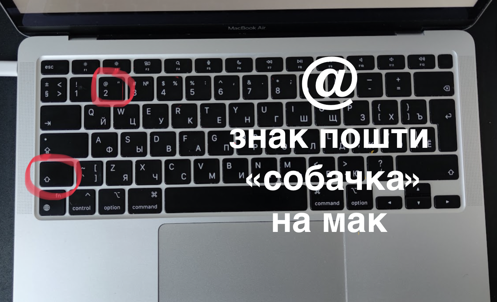

Як поставити @ (собачку, равлика) на MacBook
Знак пошти @ — він же собачка, він же равлик. Є два способи надрукувати його на MacBook — залежно від того, яка зараз активна розкладка.
Спосіб 1 — українська розкладка (не перемикатись!)

Якщо зараз активна українська розкладка — нікуди перемикатись не потрібно. Затисни Option ⌥ і натисни 2:
Option ⌥
+
2
@
💡 Клавіша Option на Mac — це аналог Alt на Windows. Знаходиться ліворуч від
пробілу.
Спосіб 2 — англійська розкладка

Якщо клавіатура переключена на англійську (EN) — затисни Shift ⇧ і натисни 2:
Shift ⇧
+
2
@
Якщо залишишся на українській і натиснеш Shift+2, замість @ з'явиться «. Як змінити мову — читай тут.
Порівняння способів
| Спосіб | Розкладка | Комбінація |
|---|---|---|
| ✓ Рекомендований | 🇺🇦 Українська | Option ⌥ + 2 |
| Альтернативний | 🇬🇧 Англійська | Shift ⇧ + 2 |
Де потрібен знак @?
- в електронній адресі:
ім'я@gmail.com - в соцмережах для тегу користувача:
@abtkacom - в коді та програмуванні